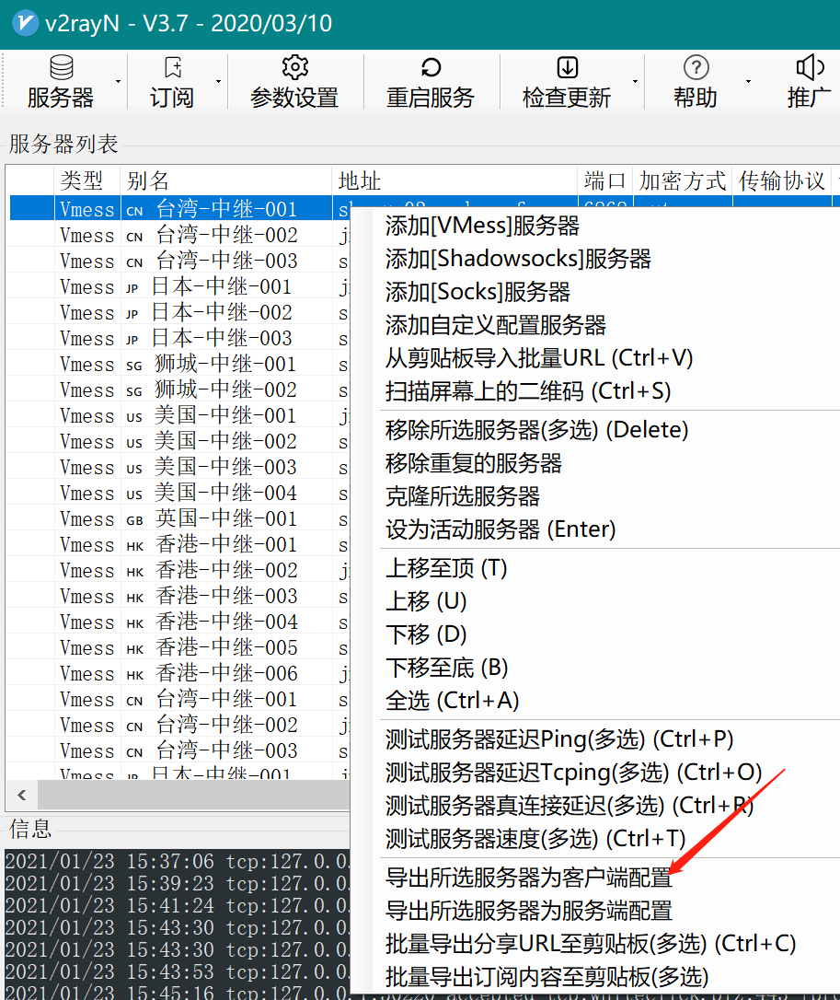
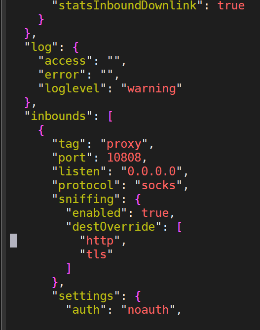
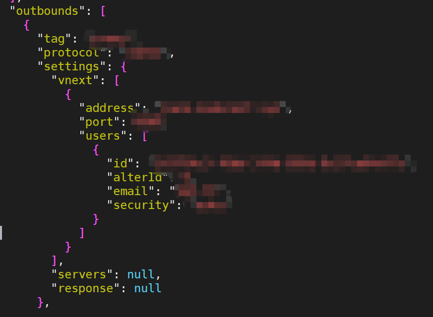
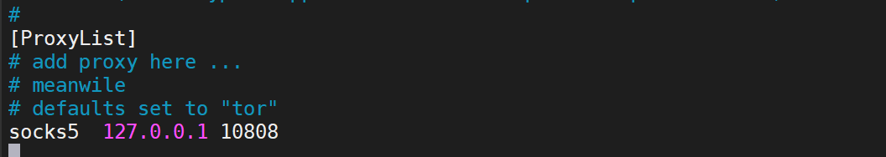

V2Ray 搭建
安装 wget
下载脚本
安装完 wget 之后就可以进行下载操作了，如下：
1
wget https://install.direct/go.sh
执行安装
1
sudo bash go.sh
显示一下信息代表安装成功:
1
[ts@ubuntu v2ray]$ sudo bash go.sh Installing V2Ray v3.14 on x86_64Downloading V2Ray.%Total%Received%XferdAverageSpeedTimeTimeTimeCurrentDloadUploadTotalSpentLeftSpeed10060806080022290--:--:----:--:----:--:--22351008482k1008482k002501k00:00:030:00:03--:--:--2813kExtracting V2Ray package to /tmp/v2ray.Archive:/tmp/v2ray/v2ray.zip creating:/tmp/v2ray/v2ray-v3.14-linux-64/ inflating:/tmp/v2ray/v2ray-v3.14-linux-64/geoip.dat inflating:/tmp/v2ray/v2ray-v3.14-linux-64/geosite.dat inflating:/tmp/v2ray/v2ray-v3.14-linux-64/readme.md creating:/tmp/v2ray/v2ray-v3.14-linux-64/systemd/ inflating:/tmp/v2ray/v2ray-v3.14-linux-64/systemd/v2ray.service creating:/tmp/v2ray/v2ray-v3.14-linux-64/systemv/ inflating:/tmp/v2ray/v2ray-v3.14-linux-64/systemv/v2ray inflating:/tmp/v2ray/v2ray-v3.14-linux-64/v2ctl extracting:/tmp/v2ray/v2ray-v3.14-linux-64/v2ctl.sig inflating:/tmp/v2ray/v2ray-v3.14-linux-64/v2ray extracting:/tmp/v2ray/v2ray-v3.14-linux-64/v2ray.sig inflating:/tmp/v2ray/v2ray-v3.14-linux-64/vpoint_socks_vmess.json inflating:/tmp/v2ray/v2ray-v3.14-linux-64/vpoint_vmess_freedom.json PORT:13437UUID:f500ecf5-e135-49c6-9ce2-78eb490d0aa9Created symlink from/etc/systemd/system/multi-user.target.wants/v2ray.service to /etc/systemd/system/v2ray.service.V2Ray v3.14is installed.
好了到这里我们就搭建成功了
如果要更新
更新 V2Ray 的方法是再次执行安装脚本！再次执行安装脚本！再次执行安装脚本！
相关命令
在首次安装完成之后，V2Ray 不会自动启动，需要手动运行上述启动命令。
而在已经运行 V2Ray 的 VPS 上再次执行安装脚本，安装脚本会自动停止 V2Ray 进程，升级 V2Ray 程序，然后自动运行 V2Ray。在升级过程中，配置文件不会被修改。
启动
1
sudo systemctl start v2ray
停止
1
sudo systemctl stop v2ray
重启
1
sudo systemctl restart v2ray
配置
安装完成之后，需要对服务器端、客户端进行配置才能进行使用，配置文件位于 / etc/v2ray/config.json：
v2ray 支持多种协议，针对不同的协议需要进行不同的配置，下面是各种协议对应的服务端配置：
vmess 协议配置
按照上面的步骤安装完之后就是类似与下面的配置，如果你想使用 vmess 协议，基本不用修改，就可以使用客户端进行连接。
查看配置文件 (该配置在后面链接时使用):
如果你已经有window的可用户端, 可以直接到处config.json



1
vim /etc/v2ray/config.json
注意：有些系统需要开放端口或者关闭防火墙才能连接。
停止防火墙请执行:
1
systemctl stop firewalld
重启防火墙:
1
firewall-cmd --reload
查看防火墙状态 not running 表示已关闭:
1
firewall-cmd --reloa
ProxyChain 使用
1 | sudo apt install proxychains |
加上一行你自己的配置端口配置

使用
1 | proxychains git clone https://github.com/haad/proxychains.git |